32 צילומים · מקור: תיעוד Oracle · גרסאות 24.4–26.2 · נאסף 14.10.2026
צילומי תיעוד רשמיים, לא עיצובים שנוצרו עבור Hotel4u. אינם כיסוי מלא של המערכת. מסכי קבוצות כאן חלקיים; כניסה מלאה ודשבורד עדיין דורשים השלמה.
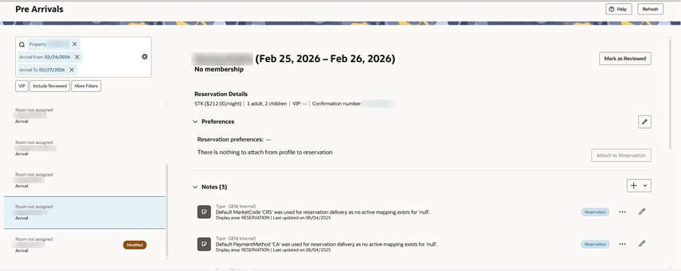
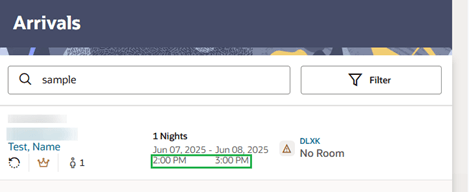
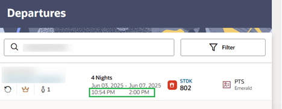
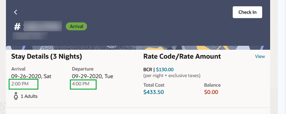
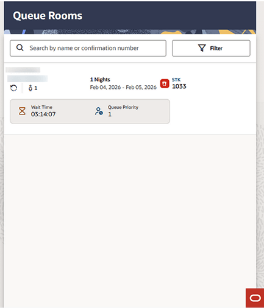
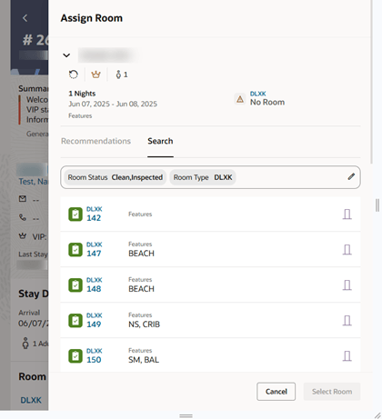
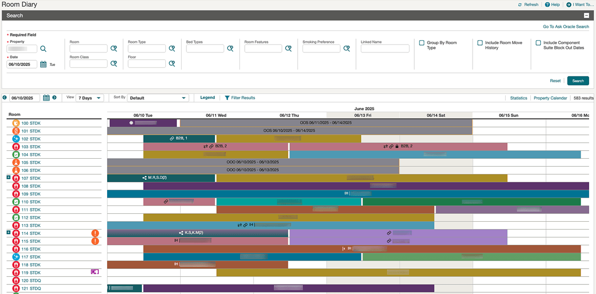
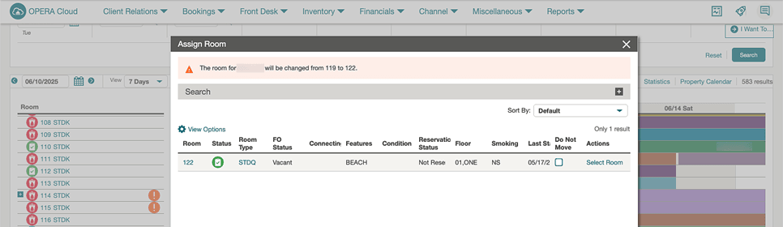
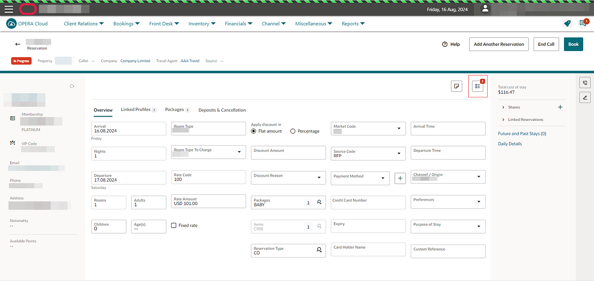
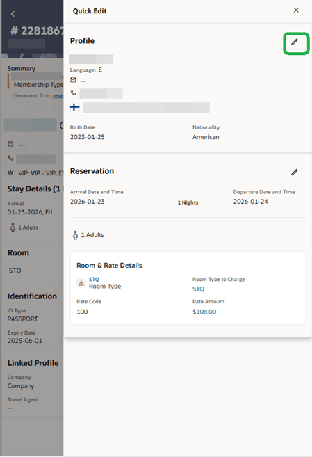
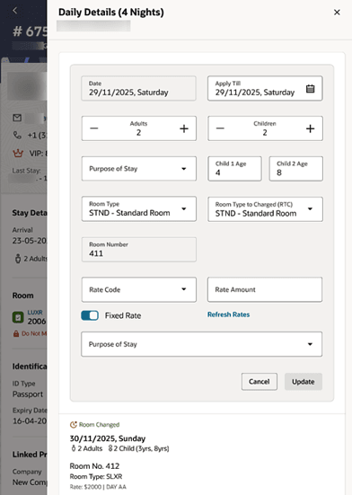
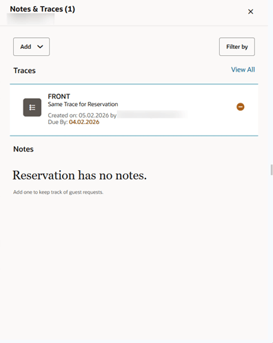
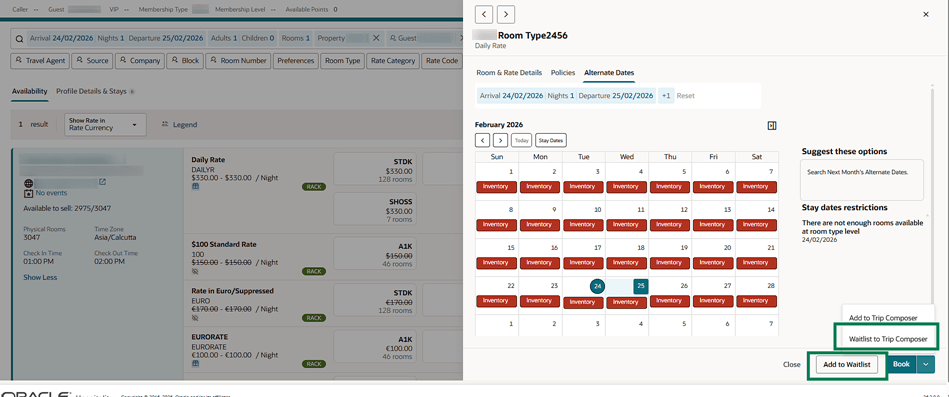
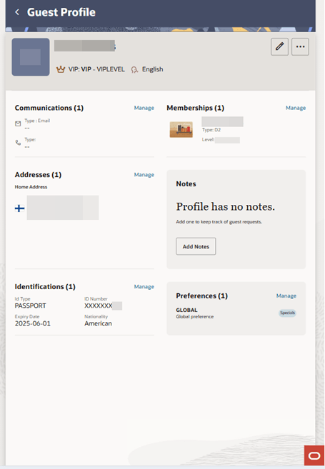
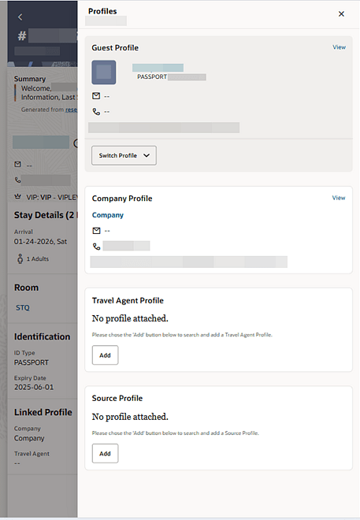
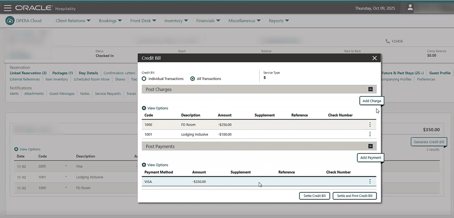
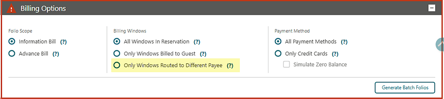
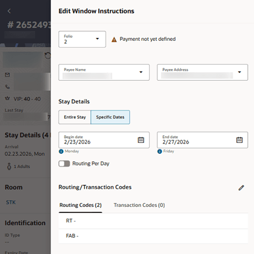
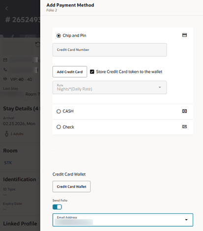
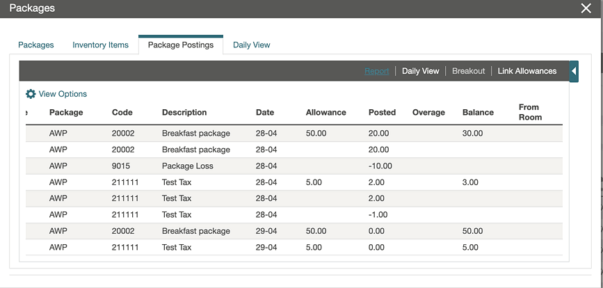
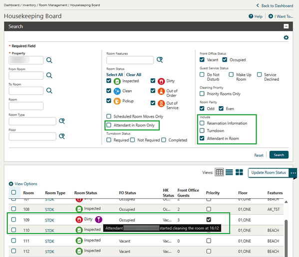
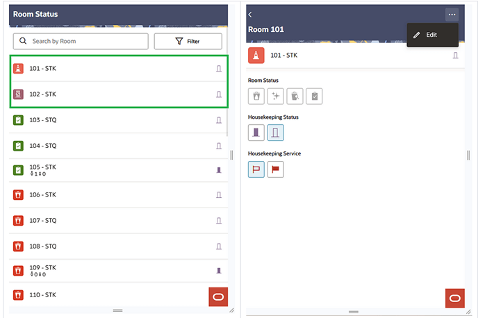
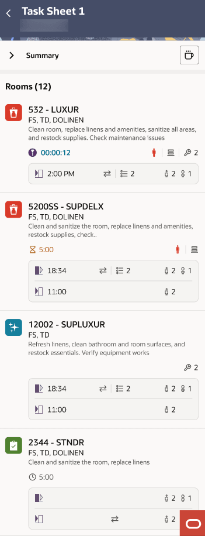
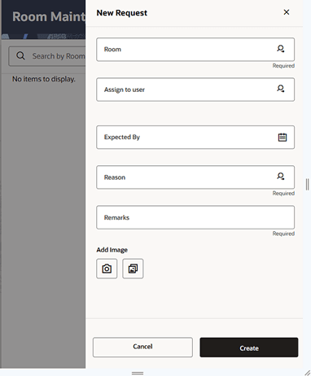
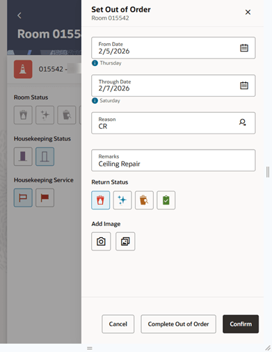
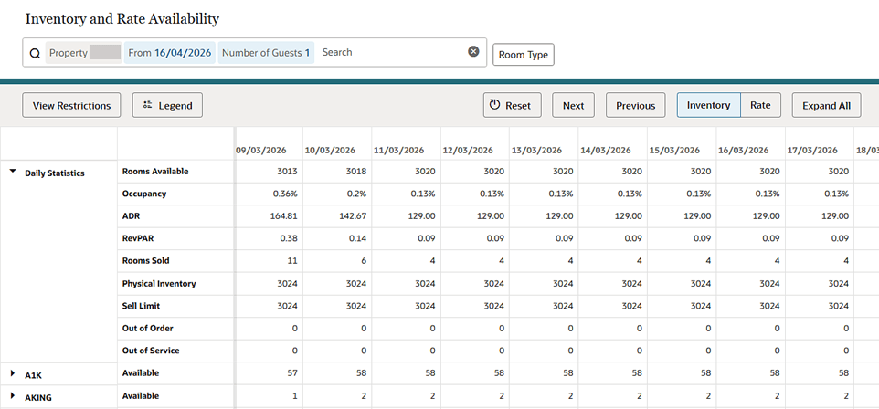
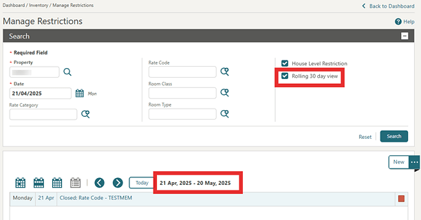
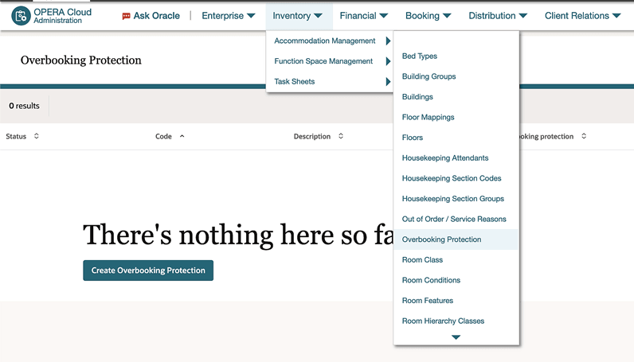
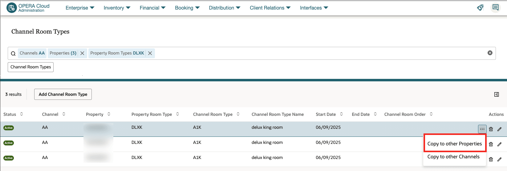
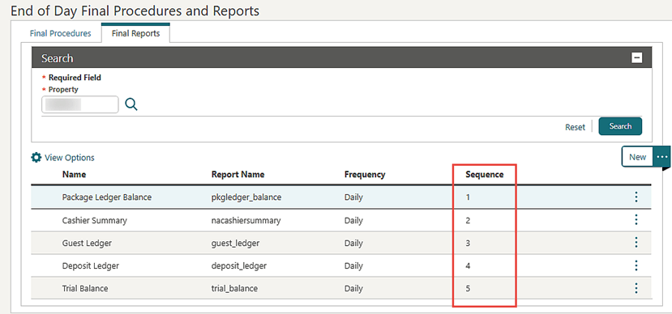
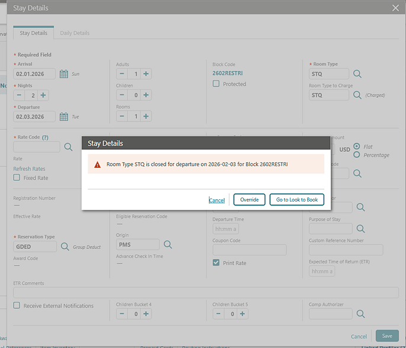
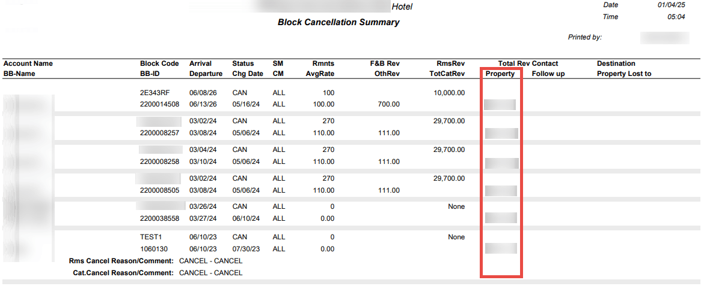